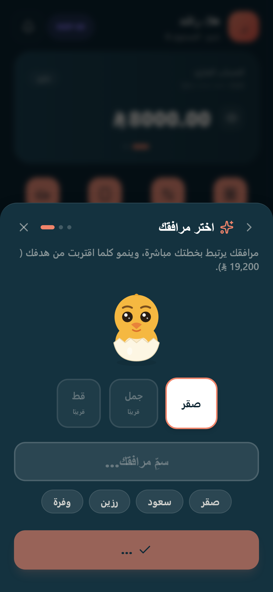
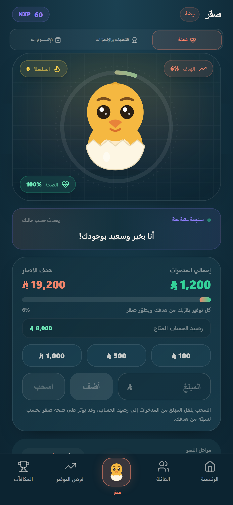
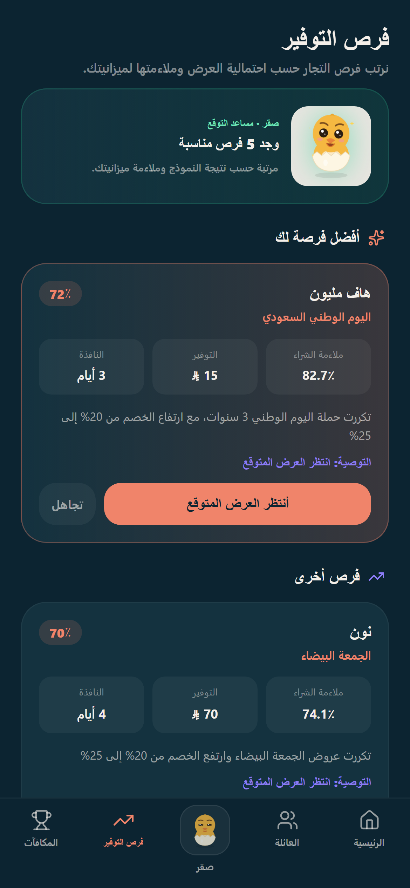
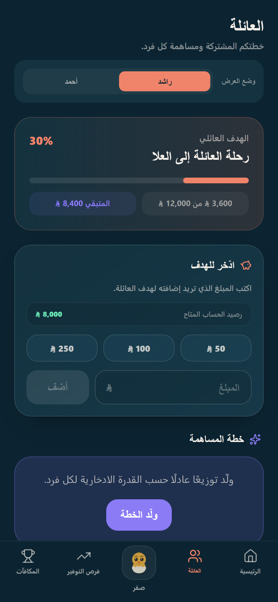
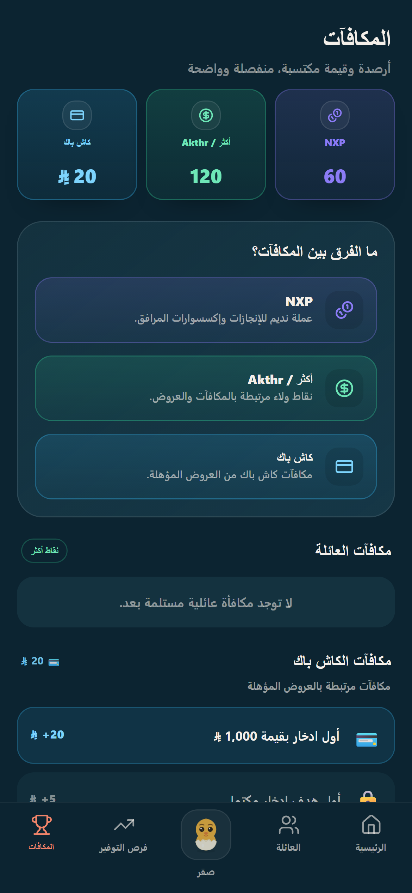

المشكلة
تعرض التطبيقات المالية غالبًا ما حدث بعد الإنفاق، مع توجيه محدود قبل الشراء، وعروض عامة، وصعوبة في الحفاظ على عادة ادخار ممتعة داخل العائلة.
PIXEL FALCONS · هاكاثون
تجربة مالية استباقية تساعد المستخدم على الادخار، واتخاذ قرار شراء أوضح، وبناء أهداف عائلية مشتركة.
التوصيات احتمالية وليست عروضًا مضمونة
يجمع نديم بين التخطيط المالي الشخصي، والتلعيب عبر صقر، والادخار العائلي، وتوقع فرص التوفير في تجربة عربية واحدة. لا يكتفي باحتمال ظهور عرض؛ بل يقيّم أيضًا مدى ملاءمته لسلوك المستخدم وميزانيته.
تعرض التطبيقات المالية غالبًا ما حدث بعد الإنفاق، مع توجيه محدود قبل الشراء، وعروض عامة، وصعوبة في الحفاظ على عادة ادخار ممتعة داخل العائلة.
يقدم نديم خطة ادخار وميزانية شخصية، ويحلل فرص التجار احتماليًا، ثم ينسق النتيجة مع سلوك المستخدم وميزانيته لمقترح: انتظر، اشترِ الآن، أو غير مناسب.
هدف شهري وميزانيات مرنة حسب الدخل.
مرافق ينمو مع التقدم المالي الإيجابي.
توقع احتمالي مع تفسير وملاءمة للممارسة.
هدف مشترك وخطة مساهمة واضحة لكل فرد.
NXP ونقاط أكثر والكاش باك دون خلط.
منطق بديل عند تعذر خدمة التنبؤ.
React · Vite · Tailwind CSS
Node.js · Express · Firebase Emulator
Python · FastAPI · CatBoost · HistGradientBoosting
Node Test Runner · pytest · Playwright




